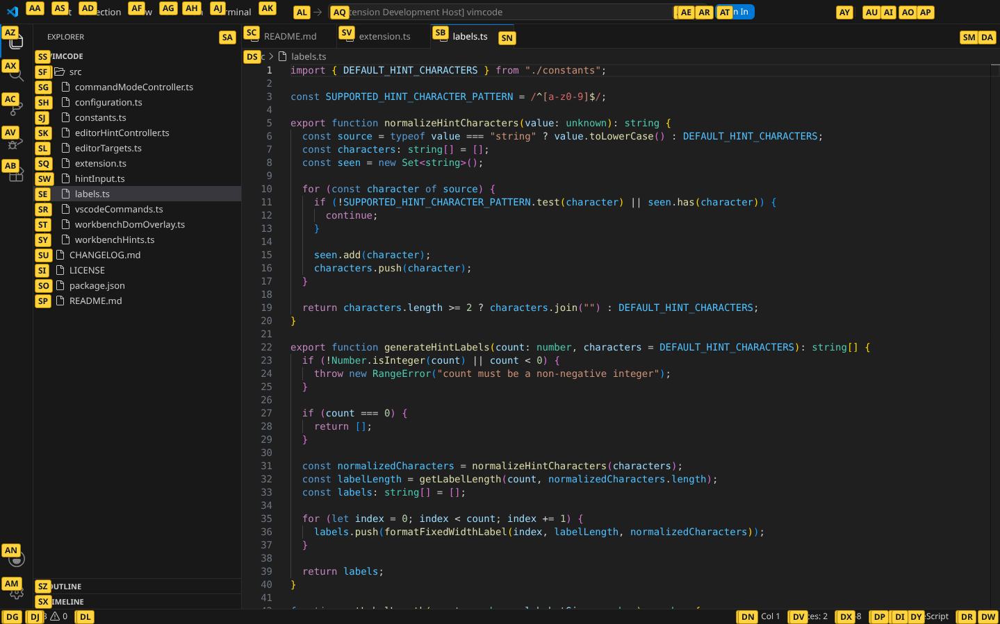

AltJ
In the editor
One-shot line-jump hints over every visible line. Type the label, the cursor teleports.
VimCode paints jump labels on your editor lines and across the whole IDE — Activity Bar, tabs, panels, lists, terminals. Type the label, land where you wanted. No mouse required.
Alt+J in the editor · f in a list or tree · Esc for command mode

One-shot line-jump hints over every visible line. Type the label, the cursor teleports.
Press f in a focused list, tree, or status bar to open IDE hints.
A tiny Vim normal-mode for the editor: h j k l, g g, scroll, then i to type again.
Built on the public VS Code API as a UI-side extension — no runtime dependencies, just vscode.
Labels render on visible lines via editor decorations. Type to jump; the session auto-cancels on scroll, edit, or editor switch.
Label open tabs, Activity Bar entries, Explorer controls, panels, terminals, status bar and settings — then run them by name.
VS Code has no normal mode, so VimCode adds one. Esc swallows text input, shows -- COMMAND --, switches to a block cursor.
Launch with the debug port and real Vimium-style labels are drawn directly over the workbench via the Chrome DevTools Protocol.
With a list or tree focused, j/k move, h/l collapse/expand, Enter selects — straight from Vim muscle memory.
Custom hint alphabet, hint caps, blank-line toggle, exact-match auto-accept. Bare keys never leak into editors, inputs, terminals or webviews.
Filter by context or search for an action. Each binding shows where it's active.
When a text editor is focused
After Esc in the editor · -- COMMAND --
Focused workbench list, tree, or status bar
When a list or tree is focused outside the editor
While hint labels are on screen
Inside another extension's UI (chat panels, etc.)
No bindings match your search.
Press Alt+J in the terminal for IDE hints.
Bare f / ShiftF deliberately stay quiet inside editors, inputs, the terminal and webviews, so they never swallow what you type.
Rebind anything in Keyboard Shortcuts under the vimiumCode.* commands.
VimCode is a UI extension — install it on the machine where the window runs.
Grab the latest .vsix from Releases, then:
$ code --install-extension vimcode-0.3.2.vsixClone the repo and package a fresh VSIX:
$ git clone https://github.com/mohsenhariri/vimcode.git
$ cd vimcode && npm install
$ npm run vsixOpen any file and try it:
Star it on GitHub, file an issue, or read the deep-dive on how the keybindings actually work.